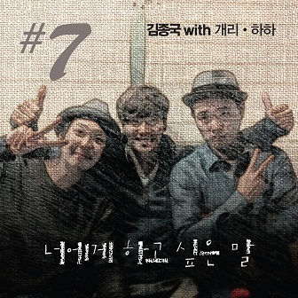

<div class="container">
    <div class="lyrics_border">
        <h2 class="center">
            
        </h2>
        <h2 class="center">
            <span class="song_title">Words I Want To Say To You (Feat. Gary and HaHa)</span>
        </h2>
        <div class="bottom_border"></div>
        <ul class="lyrics_list">
            <li class="lyric">
                <h2>Hangul / Korean Lyrics 가사</h2>
                <p>너에게 하고 싶은 말이 정말로 많이 남았어<br>
                하지만 아무 말도 난 할 수 없을 거야</p>
                <p>[하하]너 없인 하루도 못 산다고<br>
                죽어도 보낼 수가 없다고<br>
                수천 번을 다짐해도<br>
                소리 없이 내린 눈물에<br>
                지쳐있는 너의 두 어깨에<br>
                어느새 아무 말없이 고갤 떨구네</p>
                <p>[개리]우리 사랑이 이젠 지루해<br>
                헤어짐의 기로에 서서 기도해<br>
                이 엇갈림의 미로에서 빨리 빠져 나오길<br>
                너무나 기나긴 권태라는 시간은 이제 이쯤에서 끝나길<br>
                보고 싶어 웃는 너의 얼굴<br>
                무엇보다 그것이 나에겐 가장 큰 선물<br>
                작은 니 손을 꽉 잡고 걷고 싶어<br>
                햇살 가득 맞으며 함께 걷던 곳을</p>
                <p>*. 너에게 하고 싶은 말이 정말로 많이 남았어<br>
                하지만 아무 말도 나 할 수 없을 거야<br>
                이제는 사랑한단 말도 한마디 말로만 남아<br>
                울지도 못하고 니 앞에만 서있네</p>
                <p>[하하]미안하단 말이 미안해 사랑해란 말로 대신해<br>
                널 붙잡고 잡아봐도 차라리 화라도 내줬으면<br>
                차갑게 등이라도 돌리면 이제는 보내줄 수 있을 것 같은데</p>
                <p>[개리]때로는 나도 화가나 지금껏 우리 사랑한<br>
                시간 속에서 추억들만 멍하니 바라봐<br>
                하나 둘씩 서로를 알아간 수줍었던 시작도 행복했던 시간<br>
                이제는 정말 되돌릴 수 없는 걸까?<br>
                너와 나 서로 다른 것을 원하나?<br>
                혹시 이러다 정말로 돌이킬 수 없음 어쩌나?<br>
                이제는 제발 니 맘을 나에게 털어놔</p>
                <p>*. Repeat</p>
                <p>내 앞엔 아직도 니가 보이는데<br>
                넌 여전히 눈이 부신데 oh</p>
                <p>*. Repeat<br>
                울지도 못하는 니 앞에만 서있네</p>
            </li>
            <li class="lyric">
                <h2><strong>Romanized:</strong></h2>
                <p>Neoege hago sipeun mari jeongmallo manhi namasseo<br>
                Hajiman amu maldo nan hal su eobseul geoya</p>
                <p>[HaHa] neo eobsin harudo mot sandago<br>
                Jugeodo bonael suga eopdago<br>
                Sucheon beoneul dajimhaedo<br>
                Sori eobsi naerin nunmure<br>
                Jichyeoinneun neoui du eokkaee<br>
                Eoneusae amu mareobsi gogael tteolgune</p>
                <p>[Gary] uri sarangi ijen jiruhae<br>
                Heeojimui giroe seoseo gidohae<br>
                I eotgallimui miroeseo ppalli ppajyeo naogil<br>
                Neomuna ginagin gwontaeraneun siganeun ije ijjeumeseo kkeutnagil<br>
                Bogo sipeo utneun neoui eolgul<br>
                Mueotboda geugeosi naegen gajang keun seonmul<br>
                Jageun ni soneul kkwak japgo geotgo sipeo<br>
                Haessal gadeuk majeumyeo hamkke geotdeon goseul</p>
                <p>Neoege hago sipeun mari jeongmallo manhi namasseo<br>
                Hajiman amu maldo na hal su eobseul geoya<br>
                Ijeneun saranghandan maldo hanmadi malloman nama<br>
                Uljido motago ni apeman seoinne</p>
                <p>[HaHa] mianhadan mari mianhae saranghaeran mallo daesinhae<br>
                Neol butjapgo jababwado charari hwarado naejwosseumyeon<br>
                Chagapge deungirado dollimyeon ijeneun bonaejul su isseul geot gateunde</p>
                <p>[Gary] ttaeroneun nado hwagana jigeumkkeot uri saranghan<br>
                Sigan sogeseo chueokdeulman meonghani barabwa<br>
                Hana dulssik seororeul aragan sujubeotdeon sijakdo haengbokhaetdeon sigan<br>
                Ijeneun jeongmal doedollil su eomneun geolkka?<br>
                Neowa na seoro dareun geoseul wonhana?<br>
                Hoksi ireoda jeongmallo dorikil su eobseum eojjeona?<br>
                Ijeneun jebal ni mameul naege teoreonwa</p>
                <p>Neoege hago sipeun mari jeongmallo manhi namasseo<br>
                Hajiman amu maldo na hal su eobseul geoya<br>
                Ijeneun saranghandan maldo hanmadi malloman nama<br>
                Uljido motago ni apeman seoinne</p>
                <p>Nae apen ajikdo niga boineunde<br>
                Neon yeojeonhi nuni businde oh</p>
                <p>[All] Neoege hago sipeun mari jeongmallo manhi namasseo<br>
                Hajiman amu maldo na hal su eobseul geoya<br>
                Ijeneun saranghandan maldo hanmadi malloman nama<br>
                Uljido motago ni apeman seoinne<br>
                Uljido motaneun ni apeman seoinne</p>
            </li>
            <li class="lyric">
                <h2><strong>English Translation:</strong></h2>
                <p>[Jong Kook]<br>
                There are still a lot of words left that I want to tell you<br>
                But I can’t seem to say anything at all</p>
                <p>[HaHa]<br>
                Without you I can’t live even one day<br>
                Even if I die I can’t send you away<br>
                I pledge this thousands of times<br>
                In frnt of those tears that fell with no sound<br>
                In front of your tired shoulders<br>
                Suddenly no words came out of me</p>
                <p>[Gary]<br>
                Our love has become tedious now<br>
                We’re standing and praying at the intersection of separation<br>
                Wanting to walk out quickly from this staggering maze<br>
                We’ve been on this time of weariness for too long<br>
                that now we’re at an ending point<br>
                I want to see your laughing face<br>
                More than anything that will be the biggest gift for me<br>
                I want to hold tight your small hands<br>
                Walking together as the sun sets</p>
                <p>[Jong Kook]<br>
                There are still a lot of words left that I want to tell you<br>
                But I can’t seem to say anything at all<br>
                Now the only word that remains is the words “I Love You”<br>
                I can’t even cry and instead just stand in front of you</p>
                <p>[HaHa]<br>
                I’m sorry that I’m saying “sorry” instead of “I love you”<br>
                I’m getting mad rather than grabbing on and holding on to you<br>
                When you turn your back coldly now I can send you off</p>
                <p>[Gary]<br>
                Sometimes I also get mad<br>
                Until now I look blankly at the times we were in love<br>
                One by one starting to know one another shyly those happy times<br>
                Now can we really not turn back?<br>
                Do we really want something different, you and I?<br>
                Could it be there’s no way to come back?<br>
                Right now pleae trust your heart to me</p>
                <p>[Jong Kook]<br>
                There are still a lot of words left that I want to tell you<br>
                But I can’t seem to say anything at all<br>
                Now the only word that remains is the words “I Love You”<br>
                I can’t even cry and instead just stand in front of you</p>
                <p>I still see you in front of me<br>
                You still dazzle me oh</p>
                <p>[All]<br>
                There are still a lot of words left that I want to tell you<br>
                But I can’t seem to say anything at all<br>
                Now the only word that remains is the words “I Love You”<br>
                I can’t even cry and instead just stand in front of you</p>
                <p>I can’t even cry and instead just stand in front of you</p>
            </li>
        </ul>
    </div>
</div>